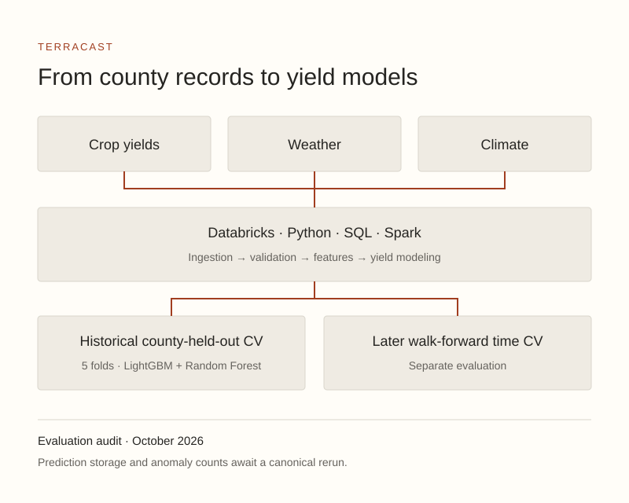

1st place · Databricks × UW Hackathon2026 · Team project
TerraCast
When crop yields depart from weather expectations.
Built a county-level crop-yield forecasting system that combines historical yield and weather data to predict corn and soybean yields and surface unusual outcomes.
My work: built Python, SQL, Spark, and Databricks pipelines for crop, weather, and climate data; contributed to LightGBM/Random Forest modeling and model evaluation; and presented the project at Data + AI Summit 2026.
- Historical county-held-out CV R²
- 0.882
- Later walk-forward time CV R²
- 0.848
- County-year/crop observations
- 6,823
County-held-out 5-fold cross-validation · Mean R² · LightGBM 60% + Random Forest 40% ensemble
Evaluation notes
Historical county-held-out CV and later walk-forward time CV are reported separately. An October 2026 audit verified the reported CV scores and identified a prediction-storage issue affecting previously reported anomaly counts, which were subsequently withdrawn.
Python · SQL · Spark · Databricks · LightGBM · MLflow
